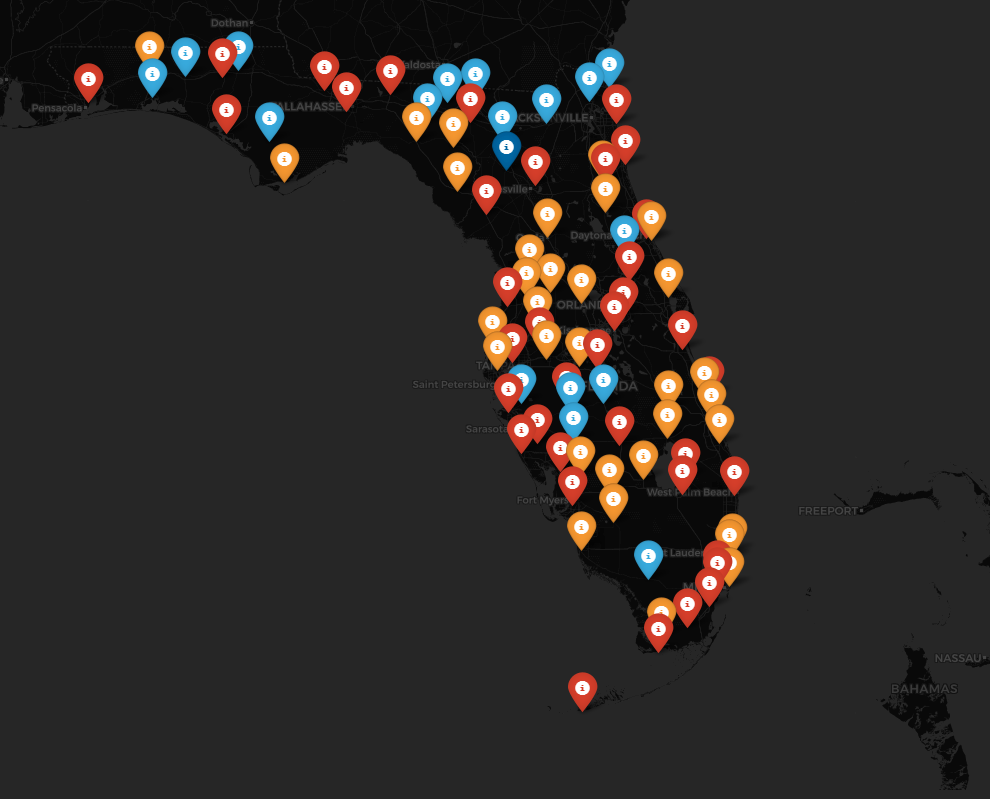
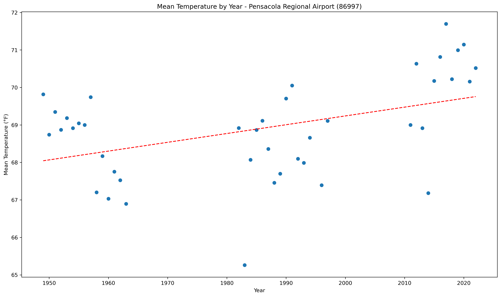

MET3220 Final Project - Florida Climate Analysis
The purpose of this project was to use the fundamentals of python programming from MET3220 and integrate them into a powerful tool that can be used to extract important information from meteorological/climatic data. Using various python modules and scripts, a visual representation of the data is displayed.

Interactive Maps
Interactive maps with data markers from weather stations throughout Florida, markers include thumbnail images.

Data Plots
Data plots generated from daily values from various weather stations throughout Florida, visualized with various Python modules.

Project Details
Project overview includes coding snippets, data plot images, interactive maps programmed in folium, and much more!